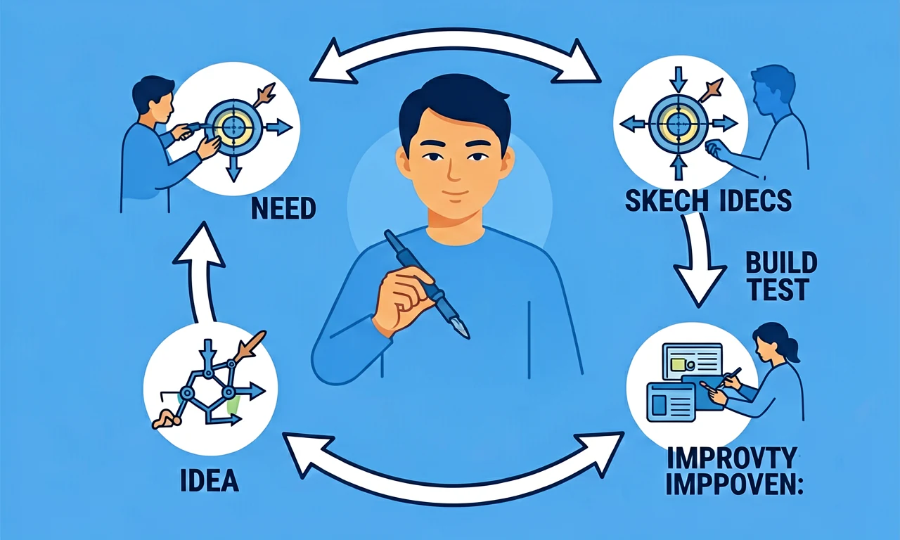

设计与制作：工程实践五步法
从发现问题到改进作品——像工程师一样，按步骤设计、制作、测试、迭代，把想法变成现实。

学习目标
- 能说出工程设计的一般步骤：明确问题→设计方案→制作→测试→改进
- 能针对简单需求提出至少两种创意方案并说明理由
- 知道制作时要考虑材料、工具和限制条件
- 能根据测试结果发现不足并提出改进方向
🎯 学习目标
🎯 能说出工程实践五步法的名称和顺序
🎯 能判断设计图中不合理结构（如支撑不足）
🎯 能分析测试数据找出改进关键点
🧭 带着问题学
❓ 为什么工程师要先画设计图而不是直接动手做？
❓ 测试时发现作品站不稳怎么办？
❓ 改进作品时怎么知道改哪里最有效？
学完这一课，这些问题你都能自信地回答。
📝 前测
前测题 1
改进作品时最重要的是看？
前测题 2
设计图必须包含？
今天你最想弄懂哪个问题？
选择或输入后，这节课会围绕你的问题展开。
课前小诊断
班级图书角的书经常掉地上，你想设计一个挡书条。按照工程实践，最先应该做什么？
先选一个，错了正好暴露你的前概念，我们一起纠正。
工程师怎样把想法变成作品？
工程设计有一个循环过程：①明确问题（谁需要什么？有什么限制？）→ ②设计方案（头脑风暴，画草图，选最佳方案）→ ③制作（选材料、用工具加工）→ ④测试（看是否满足需求）→ ⑤改进（根据测试结果修改，再测试）。
好的设计不是一次成功的。许多发明都经历了多次迭代——测试发现问题，改进后再测试，直到达到验收标准。
测试与改进：让作品更好用
测试时要对照验收标准：挡书条能不能挡住30厘米高的书？会不会倒？会不会划伤同学？如果测试发现「挡条太矮」，就要回到改进步骤：加高挡条或换更硬的材料。
记录每次测试的结果和修改，这就是工程日志。它帮助团队记住「试过什么、为什么不行、下次怎么改」。

排一排：工程设计步骤的正确顺序
把步骤卡片拖到正确的顺序位置（从第一步到第五步）。
第 1 步
第 2 步
第 3 步
第 4 步
第 5 步
排完 5 个步骤后自动判分。
设计与制作：工程实践
工程设计常用五步：明确问题、构思方案、制作原型、测试改进、交流分享。失败的测试不是终点，而是改进的信息来源。好的设计要满足约束条件，如材料有限、时间有限、必须安全。
方法：问题→方案→原型→测试→改进
先把成功标准写清楚（例如“小车滑行超过 2 米”），每轮测试只改一个变量，并记录数据，再决定下一轮改什么。
常见误区：常见误区是不设定标准就说“做好了”，或一次改很多地方导致不知道哪步有效。
马上练 1：概念辨析
工程设计中，测试失败后更合理的做法是？
马上练 2：观察推理
为比较“轮子大小是否影响小车滑行距离”，正确做法是？
📖 明确问题
And：学生知道生活中会遇到各种问题
But：但分不清哪些是可以通过设计解决的工程问题
Therefore：学会用'能不能用设计解决'来判断真实问题
工程问题要满足三个条件：1.有明确需求（比如'教室粉笔灰太多'）；2.能用实物解决（比如设计吸尘黑板擦）；3.有具体限制（比如成本不超过50元）。举个例子：学校午餐倒饭严重，可以设计'称重剩饭桶'统计浪费量，但没法用设计解决'饭菜不好吃'这种主观问题。
🌍 观察教室：桌椅高度固定导致个子矮的同学够不着桌面——这是典型的工程问题，因为可以设计可升降桌椅来解决（成本约200元/套）。
🏋️ 即练
以下哪个是工程问题？
🔍 深层理解：五镜头
🔧拆开它
像拆积木一样分解作品结构
💡解释它
用'因为...所以...'说明设计原理
⚖️比较它
对比不同方案谁更省材料/更稳固
👁️看见它
用箭头标出力的传递路径
🚀迁移它
把搭桥经验用到塔楼设计中
💡 概念检测（互动）
关于工程实践五步法，下列说法正确的是？
🔬 优化雨水收集系统设计
针对现有雨水收集系统存在的问题，提出优化设计方案
达标检测
小组做的纸桥模型在测试时中间塌了。接下来最符合工程实践的做法是？
选一个并查看反馈。
📝 真题练习
先独立作答，再点选项查看对错与错因。
选择题 1
在设计雨水收集系统时，第一步应该做什么？
选择题 2
下列哪项不属于雨水收集系统的必要组成部分？
选择题 3
在测试雨水收集系统时，最应该关注的是？
填空题 1
工程实践五步法的第三步是____。
查看答案与解析
答案：设计解决方案
五步法的顺序是：明确问题、收集信息、设计解决方案、制作模型、测试改进
填空题 2
雨水收集系统中，用于储存雨水的部件是____。
查看答案与解析
答案：储水箱
储水箱是雨水收集系统中用于储存雨水的主要部件
⚠️ 易错点诊所
❌ 用胶枪固定所有连接处
✅ 榫卯/卡扣结构更环保
💡 忽视材料特性
❌ 测试只做1次就定稿
✅ 至少3次不同条件测试
💡 缺少数据意识
🧠 记忆锚点
口诀：一画二做三测试，四改五用五步知
类比：像做菜先看菜谱，设计图就是工程师的菜谱
✅ 后测
后测题 1
真题：测试纸桥承重时，不正确的操作是？
后测题 2
迁移：设计雨伞架时，最需要参考哪类数据？
后测题 3
下列哪项不属于'解释它'的范畴？
🗺️ 课程导览图
点击节点跳转到对应章节；可切换布局。